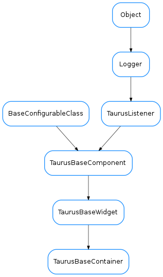

TaurusBaseContainer¶

-
class
TaurusBaseContainer(name, parent=None, designMode=False)[source]¶ Bases:
taurus.qt.qtgui.base.taurusbase.TaurusBaseWidgetBase class for the Taurus container widgets. This type of taurus container classes are specially useful if you define a parent taurus model to them and set all contained taurus widgets to use parent model. Example:
from taurus.qt.qtgui.container import * from taurus.qt.qtgui.display import * widget = TaurusWidget() layout = Qt.QVBoxLayout() widget.setLayout(layout) widget.model = 'sys/database/2' stateWidget = TaurusLabel() layout.addWidget(stateWidget) stateWidget.useParentModel = True stateWidget.model = '/state'